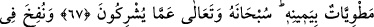

YERYÜZÜ RABBİNİN
NÛRU İLE AYDINLANIR
64. De ki: Ey câhiller! Bana Allah’tan başkasına kulluk etmemi mi
emrediyorsunuz?
65. (Rasûlüm!) Şüphesiz sana da senden öncekilere de şöyle vahyolunmuştur ki:
Andolsun (bilfarz) Allah’a ortak koşarsan, işlerin mutlaka boşa gider ve hüsranda
kalanlardan olursun!
66. Hayır! Yalnız Allah’a kulluk et ve şükredenlerden ol.
67. Onlar Allah’ı hakkıyla tanıyıp bilemediler. Kıyamet günü bütün yeryüzü
O’nun tasarrufundadır. Gökler O’nun kudret eliyle dürülmüş olacaktır. O,
müşriklerin ortak koşmalarından yüce ve münezzehtir.
68. Sûr’a üflenince, Allah’ın diledikleri müstesnâ olmak üzere göklerde ve yerde
ne varsa hepsi ölecektir. Sonra ona bir daha üflenince, bir de ne göresin, onlar
ayağa kalkmış bakıyorlar!
69. Yeryüzü, Rabbinin nûru ile aydınlanır, kitap konulur, peygamberler ve şâhidler
getirilir ve aralarında hakkaniyetle hüküm verilir. Onlara asla zulmedilmez.
70. Herkes ne yaptıysa, karşılığı tastamam verilir. Allah, onların yaptıklarını en
iyi bilendir.
“De ki: Ey câhiller! Bana Allah’tan başkasına kulluk etmemi mi emrediyorsunuz?”